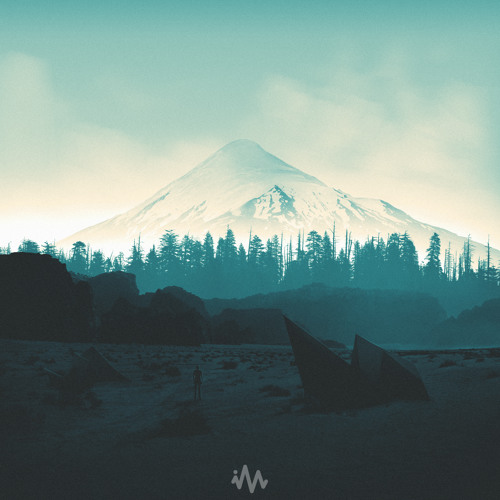

mia.
the dream of life.
Mood
Dreams
Nuages
Reggaeton en lo oscuro
Wisin & Yandel
Remember this
NF
The Dark of You
Breaking Benjamin

Wonder
Finding Hope
Sparks
Coldplay
On Chill
Wale ft Jeremih
Peaceful Place
Lofi Jazz